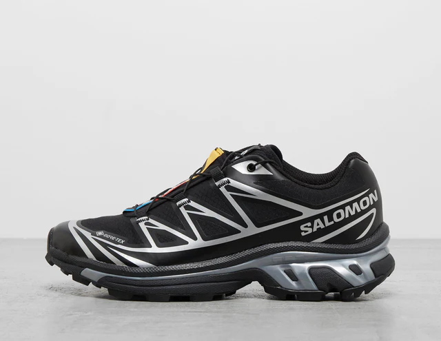
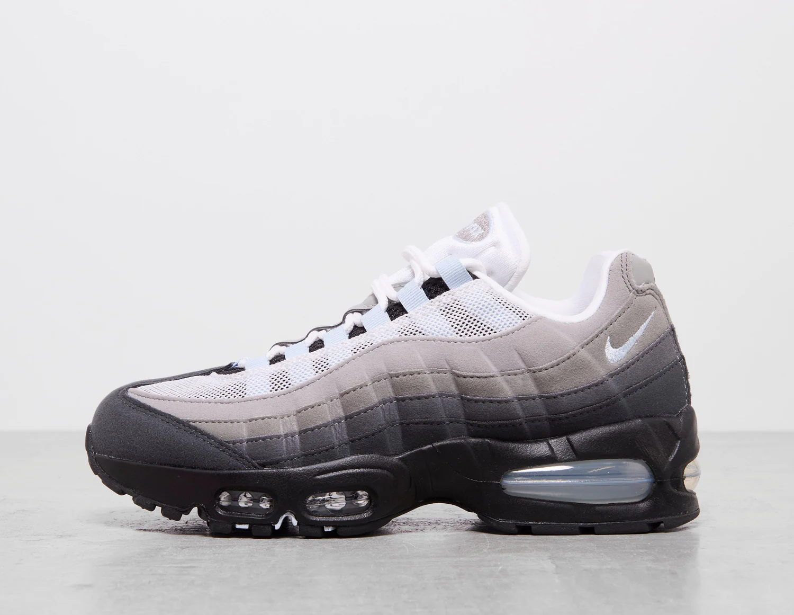

Products
Discover the perfect pair
Our products page showcases a wide range of footwear designed to match your lifestyle, style, and comfort needs. From street-ready sneakers and everyday casual shoes to performance-driven trainers and modern classics, every pair is carefully selected to deliver both fashion and function.
Salomon XT-6
The Salomon XT-6 is one of the brand’s most iconic trail-oriented shoes — originally developed for ultra-distance trail runners and mountain athletes. Over time it has also become a cult favourite in streetwear and outdoor fashion thanks to its rugged look, high-performance features, and versatile comfort.
The XT-6 features a tough mesh upper reinforced with abrasion-resistant TPU overlays, designed to protect your feet from rocks, sticks, and debris without sacrificing too much breathability. Some versions (like the XT-6 GTX) include a GORE-TEX waterproof membrane, ideal for wet conditions.
The shoe incorporates Salomon’s Agile Chassis System (ACS) and a dense EVA foam midsole. The chassis adds rigidity and anti-roll support, helping keep your foot stable on uneven terrain, while the foam offers shock absorption and energy return.

Price: £180
Buy NowNike Air Max 95
The Nike Air Max 95 is one of the most recognisable and influential sneakers in Nike’s lineup, blending running performance heritage with streetwear style. First released in 1995, it continues to be a staple both on feet and in culture — thanks to its unique design and visible cushioning technology.
The Air Max 95 stands out with its layered, wavy upper made from a mix of breathable mesh, synthetic leather, and suede overlays — offering both structure and texture. This gradient design isn’t just for aesthetics; it also helps the shoe wrap the foot for a supportive fit. Beyond materials, the silhouette is recognised worldwide for its chunky yet athletic profile, which transitioned the model from a performance runner into a fashion icon.
The Air Max 95 generally fits true to size but can feel slightly snug at first, especially in the toe box due to its structured upper. Many wearers recommend considering half a size up if you prioritise room or plan on all-day use. Because of its construction, the shoe is best suited for casual wear, walking, and lifestyle use rather than intense running or athletic training — although it certainly has performance roots.

Price: from £130
Buy NowAdidas Campus 00
The adidas Campus 00 (often seen as Campus 00s) reimagines the classic adidas Campus sneaker by injecting a Y2K and skate-inspired twist into a retro silhouette. While it draws inspiration from the original 1970s and 80s court shoes, the 00’s standout features include a chunkier profile, padded design, and contemporary comfort upgrades — making it a favourite for both street style and day-to-day wear.
Styled with a premium suede upper that feels soft yet durable, the Campus 00 carries a classic adidas look with modern flair. The iconic Three Stripes branding across the midfoot and Trefoil logos give it unmistakable heritage appeal, while tonal stitching and colour options keep the silhouette fresh.
Unlike slimmer retro styles, the 00 features a padded tongue and collar that add visual weight and extra comfort — a nod to early-2000s skate and lifestyle shoes. This chunkier form also gives it a bold streetwear presence while still fitting into casual wardrobes.
Comfort is a major strong point of the Campus 00. The padded insole and lining provide a plush feel underfoot, making these suitable for all-day wear whether you’re walking, commuting, or just hanging out. Many users also note that the suede upper moulds to your foot over time, enhancing comfort with wear.

Price: from £80
Buy Now